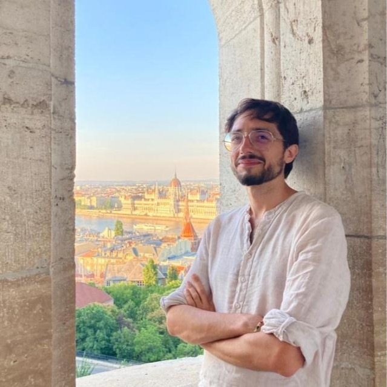

Profilo
Andrea Novellis è un politologo che studia guerre civili, governance ribelle e ordini politici nelle società segnate dal conflitto. La sua ricerca combina lavoro sul campo e analisi comparata su Kurdistan, Sri Lanka e Medio Oriente.
Il suo lavoro collega ricerca accademica e policy su allerta precoce, rischio politico e politica internazionale della sicurezza alimentare.
Incarichi e affiliazioni
- Visiting Postdoctoral Researcher, Institute of Federalism, University of Fribourg (settembre–novembre 2026).
- Research Associate, ITALIM: L’Italia e la politica internazionale della sicurezza alimentare, Università di Napoli “L’Orientale” (luglio–settembre 2026).
- Associated Member, Center on the International Politics of Food Security (CIPFS).
- Fellow, Civil War Paths, University of York (2025–2026).
Formazione
- Dottorato in Studi politici, Università degli Studi di Milano (2024).
- Laurea magistrale in Relazioni internazionali comparate, Università Ca’ Foscari Venezia (2017), con periodi di studio presso University of Toronto e Boğaziçi University.
Attività scientifica selezionata
- Co-editor di un numero speciale di prossima pubblicazione su “Informality and Global Political Orders,” Cambridge Review of International Affairs.
- Membro dell’Academic Advisory Board, Vienna Kurdish Studies Yearbook.
- Co-editor di “Exploring the Kurdish Movement: Power Relations, Historical Dynamics and Theoretical Perspectives,” Partecipazione e Conflitto 18(2).
Didattica e finanziamenti
Course Instructor presso il Bandaranaike Centre for International Studies di Colombo per il corso “Rethinking Peace, Conflict, and the Post-Liberal Order”. Teaching Assistant per il corso magistrale “Global Geopolitics” presso l’Università degli Studi di Milano (2022–2023). Beneficiario nel 2026 di una borsa MAECI per una missione di studio e ricerca e attività accademiche su invito presso il BCIS. Principal proposal writer per ITALIM, progetto interuniversitario finanziato dal Ministero degli Affari Esteri e della Cooperazione Internazionale.